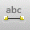

A net is not required to have
an alias, but by using an alias, you can establish
connectivity.
Within a schematic page, a net
with an alias is connected to any net with the same alias,
or to any off-page connector,
hierarchical port, or global
pin with the same name.
A net alias differs from a net name in that a net can have
numerous aliases, but it can have only one name. When the
Create Netlist tool resolves the conflict between the
various aliases attached to a net, the net alias has the
highest priority; so by assigning a net name, you can
determine the final name of your net.
When you place a wire, it is assigned a system-generated
name. When you place a net alias on the wire, the
system-generated name is replaced by the alias.
A net alias is visible at the location where you place the
alias, You may find it useful to label the net throughout
your project.
 To create a net alias
To create a net alias
-
From the Place menu, choose the .
- Enter the net alias text in the dialog box that appears, then click OK. A rectangle representing the net alias is attached to the pointer.
- Use the mouse to move the net alias and click the left mouse button on the wire to place the net alias. The net alias appears in the selection color. The tip of the pointer must be touching the net for you to place the net alias.
- Select the selection tool to dismiss the net alias tool. The alias is added to the alias list for the net.
Shortcut
Tool palette: 
To assign a net name
- Select the wire.
-
From the Edit menu, choose the . The Property editor window opens to the Schematic Nets tab.
- Change the entry in the Name column to one of the existing net aliases and close the property editor.
To edit a net alias
- Select the net alias.
- From the Edit menu, choose the Properties command.
- In the dialog box that appears, you can change the color, the font, the rotation and the alias itself.
- Click OK.
To move net alias text
- Select the net alias text on a net. A handler appears around the net alias text.
-
Drag the net alias text handler to the location (on the
same net) where you want to place it.
Note: You can not move a net alias outside of a net segment. - Drop the net alias handler. The net alias text appears in the new location on the net.
To display the net alias at multiple locations
- Select the portion of net where you want the alias to be visible.
-
From the Edit menu, choose the . The property editor appears.
- Click the New button. The Add New Property dialog box appears.
- Assign a name, such as NAME1, to the new property. Do not assign a value at this time. Click OK to dismiss the Add New Property dialog box.
- Select the cell of the new property, and click the Display button.
- Select the Value Only Display Format option, and click OK.
- Click Apply, and then close the property editor.
- Repeat steps 1 through 7 for each location where you want the alias to appear, assigning another property name (NAME2, NAME3 . . .) at each location.
- Use the Update Properties tool (see To update part or net properties) to assign the net's alias as the value to the properties NAME1, NAME2, NAME3 . . .
|
|
Capture preserves the case of part names and net names, but ignores the case when comparing names for electrical connection. That means you may use uppercase or lowercase letters as you wish, but you need not remember the case. |